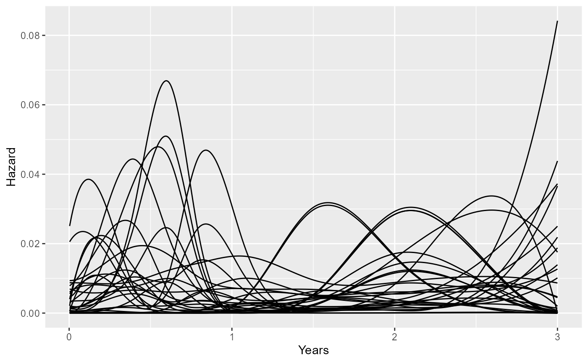
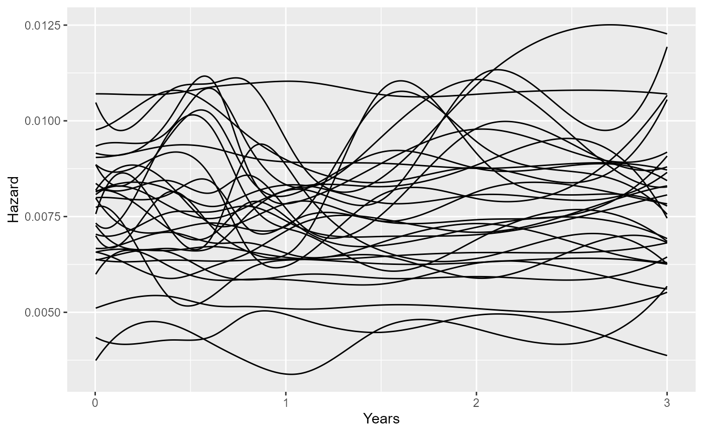

Priors in survextrap models
Christopher Jackson chris.jackson@mrc-bsu.cam.ac.uk
2023-03-30
Source:vignettes/priors.Rmd
priors.RmdThe flexible survival models in survextrap are
Bayesian.
This means that they analyse data under a parametric model, which assumes that each data point \(x\) comes from a sampling distribution with probability density function \(f(x|\theta)\). The parameters \(\theta\) are estimated by combining a “prior” distribution \(p(\theta)\), representing beliefs about model parameters external to the data, with a “likelihood” that represents the information from a set of data \(\boldsymbol{x}\), producing a posterior distribution \(p(\theta | \boldsymbol{x})\).
The principle behind the package is that any information that is relevant to extrapolation should be represented transparently. This is arguably clearest if expressed through data or parametric mechanisms.
Data x include individual-level, right-censored survival data, and aggregate counts of survivors, as described on the front page. Expert judgements about survival can be converted to pseudo-data in the form of aggregate counts.
-
Parametric mechanisms denote the form of \(f()\). These might include the notion that some people are cured (mixture cure models), or that disease-specific and background hazards can be modelled additively (relative survival models). Conventional parametric survival models (like the Weibull and log-logistic) are generally used out of familiarity, not because they are thought to represent meaningful mechanisms for survival.
The default parametric model in
survextrapis a flexible spline-based model. This is designed as a “black box”, which aims to fit the data as well as possible. It is is not designed to be treated as a mechanism for extrapolation.However, this spline model has parameters \(\theta\), which still need prior distributions, because the model is Bayesian!
This article describes these two kinds of “prior” that can be used in
survextrap models.
Judgements about survival probabilities, that can be converted to pseudo-data, and treated as part of the model likelihood for data \(\boldsymbol{x}\).
Priors on parameters \(\theta\) in spline models.
Converting prior judgements about survival to external data
We suppose there is some expert judgement about survival over the time period from \(t\) to \(u\), and we can “elicit” this as the probability \(p\) that a person who is alive at \(t\) will have died before \(u\).
This elicitation might be done in many ways (e.g. through consensus methods, or consulting multiple experts and aggregating their beliefs). survextrap does not include tools or guidance for doing elicitation, but further info is available, e.g. from Bojke et al., SHELF.
One simple way is to elicit:
a best guess for what \(p\) is. We could interpret this as the median of the prior distribution.
upper and lower prior credible limits, such that we are (for example) 90% sure that \(p\) is within this range. We can interpret these as the 5% and 95% quantiles.
As an example, suppose we elicited a best guess of 0.6, and a 90%
credible interval of 0.4 to 0.8. These can be fitted to a
probability distribution representing beliefs about \(p\). The SHELF R package provides a useful
function, fitdist, to do this. We use this to fit a
Beta distribution, a typically-used distribution for
probabilities.
library(SHELF)
p <- c(0.4, 0.6, 0.8)
bet <- fitdist(vals=p, probs=c(0.05, 0.5, 0.95), lower=0, upper=1)$Beta
bet## shape1 shape2
## 1 9.190895 6.19854This gives a Beta(9.2, 6.2) distribution. We can plot its probability density function, to check that the distribution represents the beliefs about \(p\) that we intended to use:
library(ggplot2)
ggplot(data.frame(p = c(0, 1)), aes(x = p)) +
stat_function(fun = dbeta, args=list(shape1=bet$shape1, shape2=bet$shape2)) +
ylab("Density")
We now convert the elicited Beta distribution to pseudo-data.
The trick for doing this comes from a basic result about Bayesian estimation of an event probability \(p\). Suppose we start with a Beta\((a,b)\) prior for \(p\), and observe \(y\) events out of \(n\) individual observations, where each observation may or may not have resulted in an event, so that \(y\) comes from a Binomial distribution with probability \(p\). The posterior for \(p\) is then Beta\((a+y, b+n-y)\).
We can then equate our elicited belief (call it Beta\((e_1, e_2)\), say) with a posterior distribution under a vague prior (say a Beta\((a=0,b=0)\)). Therefore \(e_1=a+y\) and \(e_2 = b+n-y\), hence \(y=e_1\), \(n = e_1 + e_2\).
In other words, our elicited Beta\((e_1,e_2)\) distribution is equivalent to
the knowledge from an aggregate count of \(e_1\) events out of \(e_1 + e_2\) observations. This aggregate
“pseudo-data” can be used as an external data source in
survextrap.
For example, the Beta(9,6) distribution above is equivalent to pseudo-data of 9 events out of 15 trials. The point estimate of the event probability from this data would be 9/15 = 0.6 (our original guess). A pseudo-dataset of 90 events out of 150 trials would have the same median, but a narrower credible interval, since the dataset is larger, implying greater confidence that the true \(p\) is near to the point estimate.
Further notes on elicitation
Academic note: there are different ways of defining a vague Beta prior for a probability. Beta\((0,0)\) is a uniform distribution for the log odds \(\log(p/(1-p))\), and Beta\((1,1)\) is uniform on the scale of the probability \(p\). The “Jeffreys” prior Beta\((0.5, 0.5)\) is sometimes used as a compromise between these. The difference between these choices is unlikely to matter in practice.
We could elicit survival probabilities over different time intervals, and use these as multiple
externaldatasets insurvextrap.It would probably not be appropriate to include beliefs about the same quantity, elicited from multiple experts, as multiple external datasets in
survextrap. This is because the experts may have shared beliefs based on their common knowledge of the field. If multiple experts are consulted about the same quantity, their beliefs should be aggregated into a single distribution before usingsurvextrap, e.g. by using mathematical aggregation or a consensus method. Again, see, e.g. Bojke et al. or SHELF, for more information about elicitation.
Priors on spline parameters
The parameters of the spline model are mathematical abstractions which do not have meaningful interpretations such as means or variances for survival times. However for Bayesian modelling, we still have to place priors on them.
A general way to ensure that the chosen priors represent meaningful
beliefs is through simulation. survextrap provides
some tools for this.
Plotting plausible hazard trajectories
Before fitting a model, we can use the mspline_priorpred
function to check that hazard curves simulated from the prior would be
considered plausible representations of the knowledge that exists
outside the data.
To use this before the model is fitted, we have to know the knots
defining the spline, and choose a set of priors. survextrap
provides a set of default priors, which may or may not be sensible in a
given application, and a procedure for picking knots.
First we fit a default model and print the default priors that are used.
library(survextrap)
nd_mod <- survextrap(Surv(years, status) ~ 1, data=colons, fit_method="opt")
print_priors(nd_mod)## Priors:
## Baseline log hazard scale: normal(location=0,scale=20)
## Smoothness SD: gamma(shape=2,rate=1)The “baseline log hazard scale” parameter is the parameter \(\log(\eta)\) in the definition of the M-spline function for the hazard: \(h(t) = \eta \sum_k p_k b_k(t)\). By itself, \(\eta\) does not define a hazard. It only defines a hazard after being combined with the basis coefficients \(p_k\) and basis terms \(b_k()\).
The “smoothness SD” is the parameter \(\sigma\) . This is even harder to interpret than \(\eta\). Values of \(\sigma=0\) represent certainty that the hazard is the one defined by the prior mean for the \(p_k\). Values of 1 or more favour wiggly hazard curves, while very high values are not meaningful.
The prior mean for the \(p_k\) can
be examined in coefs_mean - by default, this defines a
hazard function \(h(t)\) that is
constant over time. The number and location of knots can also be
examined in the mspline component of the model.
round(nd_mod$coefs_mean,2)
sp <- nd_mod$msplineTogether, these knots and prior choices define the model to be fitted to the data. We can now simulate the consequences of these choices, in terms of:
the typical level of the hazard
what range of hazard trajectories are plausible
how much the hazard tends to vary through time
The fitted model object (nd_mod here) has a component
called prior_pred, which is a list of functions that can be
used to simulate various interesting quantities from this prior
specification.
Constant hazard level
The first thing to verify is the typical level of the hazard. If no
prior for \(\eta\) is supplied in
survextrap, then a default \(N(0,20)\) is used, which is very vague. We
can illustrate the implications of this choice by deriving the prior for
the constant hazard \(h(t) = \eta \sum_k p_k
b_k(t)\) which is implied by the prior for \(\eta\) and the special values of \(p_k\) that imply a constant hazard (found
using mspline_constant_weights()).
The haz_const function returns a summary of the implied
prior for this constant hazard, and the implied prior for the mean
survival time \(1/h(t)\).
nd_mod$prior_pred$haz_const()## haz mean
## 2.5% 8.573188e-18 1.044229e-17
## 50% 9.060939e-01 1.103638e+00
## 97.5% 9.576440e+16 1.166427e+17These credible limits are extreme. Perhaps this is reasonable if the dataset is large and would dominate any choice of prior. In most applications, however, we have some idea of what a typical survival time should be, hence what a typical hazard should be, say within an order or two of magnitude.
A simple heuristic is to specify
a prior guess (e.g. we guess that average survival time is 50 years after the start of the study)
a prior upper credible limit (e.g. we guess it is unlikely that the mean survival time is 80 years after the start of the study). Note that this represents uncertainty about the mean survival in a population, rather than the variability between individuals in the population, so perhaps this should be narrower than you think.
hence giving a median and lower credible limit for \(h(t)\), hence (after dividing by the constant \(\sum_k p_k b_k(t)\) for an arbitrary \(t\) and logging), giving a median \(m\) and lower credible limit \(L\) for \(\log(\eta)\). Hence a normal prior for \(\log(\eta)\) can be defined with median \(m\), and standard deviation \((L-m)/2\).
This is implemented in the function p_meansurv. Note
that a spline knot specification is required to obtain the constant
\(\sum_k p_k b_k(t)\).
p_meansurv(median=50, upper=80, mspline=sp)For a given prior on \(\eta\) and
spline specification, the function prior_haz_const can be
used to summarise the implied prior on the constant hazard and mean
survival time. We use this now to check that the prior that we defined
with p_meansurv is the one that we intended to define.
prior_haz_const(mspline=sp,
prior_loghaz = p_meansurv(median=50, upper=80, mspline=sp))## haz mean
## 2.5% 0.0125 31.25
## 50% 0.0200 50.00
## 97.5% 0.0320 80.00The prior median and upper credible limit match the numbers that we put in. We also get a lower 2.5% credible limit as a consequence of the normal assumption - this should be checked for plausibility, and the prior revised if necessary.
Finally, an updated survextrap model can be fitted that
includes the weakly informative prior that we defined and checked. For
reporting purposes, we can use print_priors to view the
normal prior for \(\log(\eta)\) that
was automatically derived.
ndi_mod <- survextrap(Surv(years, status) ~ 1, data=colons, fit_method="opt",
prior_loghaz = p_meansurv(median=50, upper=80, mspline=sp))
print_priors(ndi_mod)## Priors:
## Baseline log hazard scale: normal(location=-3.81341071676004,scale=0.2398021764446)
## Smoothness SD: gamma(shape=2,rate=1)Hazard as a function of time
The prior_pred component includes a function called
haz which simulates a desired number of hazard trajectories
over time, given the prior. This function returns a data frame (here
called haz_sim) which contains the hazard value
haz, time point time and simulation replicate
rep.
Here we simulate nsim=30 prior hazard trajectories from
the model ndi_mod, and plot them with
ggplot.
set.seed(1)
haz_sim <- ndi_mod$prior_pred$haz(nsim=30)
ggplot(haz_sim, aes(x=time, y=haz, group=rep)) +
geom_line() + xlab("Years") + ylab("Hazard")
An alternative way is to use the mspline_priorpred
function, which does not require a model to be specified with the
survextrap function, but does require the knots and priors
to be supplied explicitly.
set.seed(1)
haz_sim <- mspline_priorpred(iknots=sp$iknots, bknots=sp$bknots, degree=sp$degree,
coefs_mean = ndi_mod$coefs_mean,
prior_smooth = p_gamma(2,1),
prior_loghaz = p_meansurv(median=50, upper=80, mspline=sp),
tmax=3, nsim=30)These plots can give some idea of how much risks might be expected to
vary over time. The parameter driving these variations is \(\sigma\), whose prior can be defined with
the prior_smooth argument to survextrap. In
the default model, \(\sigma=0\) means
that we are sure that the hazard will be constant. Therefore we might
want to define the prior for \(\sigma\)
to rule out implausibly large changes. For example, a Gamma(2,20):
set.seed(1)
haz_sim <- mspline_priorpred(iknots=sp$iknots, bknots=sp$bknots, degree=sp$degree,
coefs_mean = ndi_mod$coefs_mean,
prior_smooth = p_gamma(2,20),
prior_loghaz = p_meansurv(median=50, upper=80, mspline=sp),
tmax=3, nsim=30)
ggplot(haz_sim, aes(x=time, y=haz, group=rep)) +
geom_line() + xlab("Years") + ylab("Hazard")
The choice of this prior might be important if we want to extrapolate outside the data, while accounting for potential hazard changes outside the data. If the data informing extrapolation are weak, then the extrapolations will be sensitive to the prior for these potential hazard changes.
Plotting multiple trajectories gives a rough idea, but ideally we want a more quantitative summary of the typical amount of variation through time.
Ratio between high and low hazards over time
The variation in a hazard curve can be summarised simply by taking a fine grid of equally-spaced points between the time boundary knots, and computing the empirical standard deviation of the hazard on those points. If the hazard is constant, then the SD will be zero.
Since the SD depends on the scale of the hazard, a more useful measure of variation would be the ratio between a particularly high and a particularly low hazard on this grid. High and low might be defined from the 90% and 10% quantiles over time. If the hazard is constant, over time, this ratio will be 1.
These measures are computed by the haz_sd()
function.
set.seed(1)
ndi_mod$prior_pred$haz_sd()## sd_haz sd_mean hr
## 2.5% 0.001168678 2.443512e+01 1.613613e+00
## 50% 0.007332239 5.754781e+02 2.781123e+01
## 97.5% 0.021517722 2.053783e+12 1.926511e+07The implied prior for the high/low hazard ratio is shown in the
hr column. This shows that the default Gamma\((a=2,b=1)\) prior used in this model is
very vague. We can make it less vague by reducing \(a/b\). A Gamma(2, 5), for example, leads to
an upper 90% credible limit of about 5-6 for the hazard ratio over time.
Trial and error is probably necessary to produce a prior that is judged
plausible by this metric.
set.seed(1)
prior_haz_sd(mspline=sp,
prior_smooth = p_gamma(2,5),
prior_loghaz = p_meansurv(median=50, upper=80, mspline=sp),
quantiles = c(0.1, 0.5, 0.9),
nsim=1000)## sd_haz sd_mean hr
## 10% 0.0005275675 9.877431 1.134455
## 50% 0.0019418839 41.158853 1.742006
## 90% 0.0053229716 254.616143 5.791212Note that a large number of simulations nsim from the
prior may be required for a precise estimate of these tail quantiles,
and the distribution is skewed, so that the 95% credible limit may be
much higher than the 90% limit, for example.
Let us now fit a model and compare the posterior for this hazard ratio to the prior…
[Further work to do on this article. Compare posteriors of RMST between different priors]